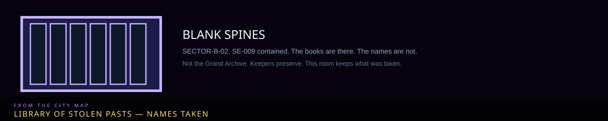

/// RAPID JUMP:
STATUS: ARCHIVE VERIFIED |
CLEARANCE: LEVEL-4 OVERSIGHT |
PROTOCOL: REVERIE DIRECTORATE
ARTICLE
DISCUSSION
SOURCE
HISTORY
YEAR 4,238 · DAWN OF HOPE
ATLAS · ZONE B · SE-009
The Library of Stolen Pasts
“The books are there. The names inside them are not.”

 ErasureWhat was taken
ErasureWhat was takenOverview
The Library of Stolen Pasts is the location line on SE-009 The Memory Weaver: SECTOR-B-02, Zone B — library of stolen pasts; contained. It is not the Grand Archive. Keepers preserve. This room keeps what was taken.
SE-009 weaves memories into webs. Tale line: “Threads of the unremembered. They move on their own.” SECC: C-IVγ-009 [VS] — Subject, Entity (IV), Major (γ), City Sorrow, Void, Subject-Dream. Location line is this room: SECTOR-B-02, Zone B, contained. R.D. Observation Level 3 — Advanced. Primary pressure is identity / memory, not masonry.
The entity’s body is woven from crystallized memories rather than flesh — translucent, flickering with stolen faces and voices. Eight legs of braided memory-thread. Many eyes are Han-crystal sockets in which thousands of tiny recollections turn. It is cold, dry, almost weightless, and drips a thin numb damp wherever a memory dissolves. That drip is how the library smells. The stacks are not wood. They are the same thread, frozen into shelves. People get lost in them for hours they cannot later name.
The entity is mobile — it crawls. The room is still a Place. You can schedule the cell and still lose an afternoon to a corridor that was not on the stack map this morning.
Not the Grand Archive
Building 2, Zone A, is the Keepers’ Grand Archive: history, Whispering Index, vaults into Dream-space. The Library of Stolen Pasts is a Zone B containment geography. Memory Fray / Washers steal from the Archive and sell. SE-009 is what happens when stolen recollection coagulates into a weaver instead of a ledger. The guild Weavers (직공) are living people with looms in the Spire; do not file this room under them.
M.A.W. from this entity is the Forgotten set — Forgotten Lens, Veil, Mask — not the misfiled “Memory Blade” on the SE-003 slot. See Memory Washers and Zone B.
Working the stacks
Valid work against a memory-pressure Subject is not “read quietly.” Insight and related types on the entity page apply. Failed work or ignored activation (Sorrow Gauge climbing) is a breach of identity, not of masonry. Agents report leaving with someone else’s childhood stuck under the tongue.
Observation Level 3 means a Containment Lead signs the stack map before a new agent walks in; Floor 4 Insight Forge can request a memory-trace after, not during. If the room starts filing your name on a spine, leave. That is not a catalog error. That is the Weaver noticing you. Combat, SECC, and M.A.W. stay on the entity and arsenal pages. This article is the room.